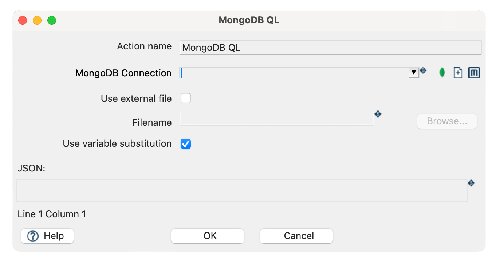
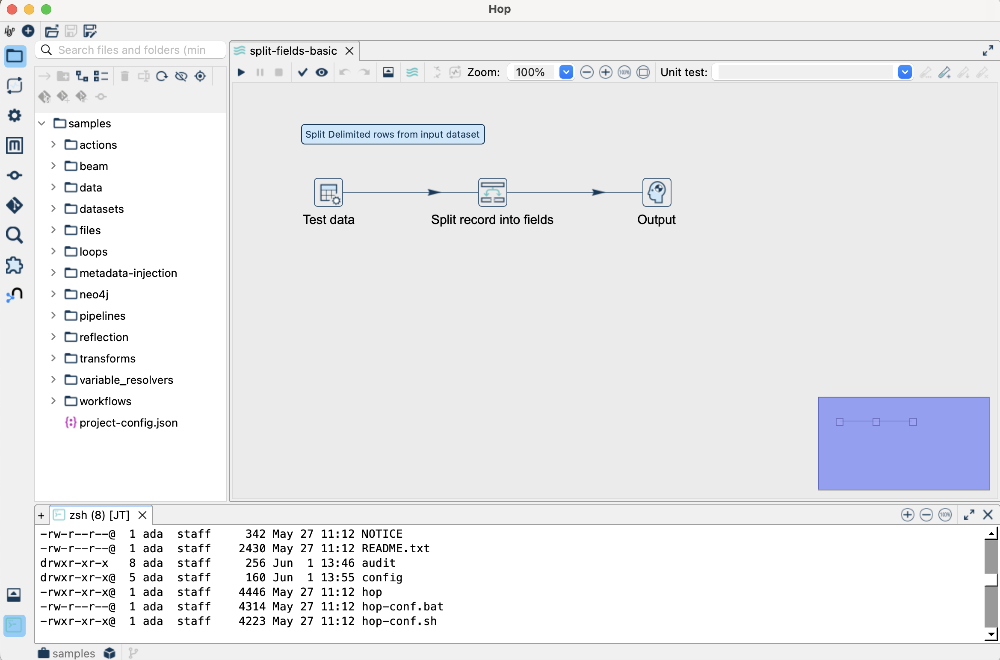
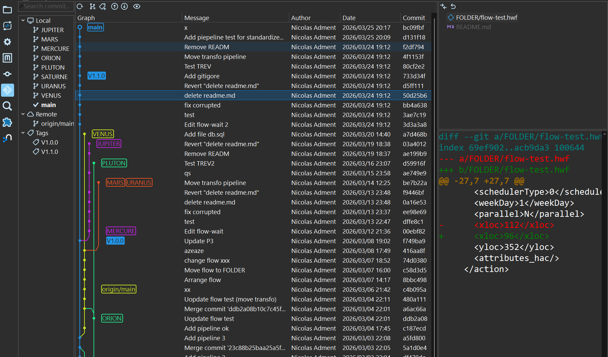

The Apache Hop community is excited to announce the release of Apache Hop 2.18!
This release is the result of three months of focused development, collaboration, and rigorous testing. With 280 closed tickets by 21 contributors, including 10 first-time contributors, 2.18 brings significant new capabilities, deeper integrations, and a range of improvements that make Apache Hop more powerful and enjoyable to work with every day. A sincere thank you to every contributor, tester, and user who invested their time and expertise into making this release possible.
This is your project. Your contributions shape what Apache Hop becomes.
- Java 21
- Py4J Gateway
- MongoDB Query Language Action
- Multiple AWS S3 Accounts
- Drill Down into Running Pipelines and Workflows
- Split the Canvas into 2 Windows
- Terminal Support inside the IDE
- New Git Perspectives
- Rename and Refactor Metadata Elements
- WebDAV Filesystem Support
- Complex XML Output
- New File Types and Syntax Highlighting
- XML Cleanup
- Notable Bug Fixes
- The Apache Hop Community Keeps Growing
- Get Apache Hop 2.18 today!
- GitHub Issues
- Looking forward
or download Hop 2.18.0 right away.
Java 21
Apache Hop now requires Java 21 to run. This keeps us on track with Java LTS support and sets a solid, modern foundation for the releases ahead.
Py4J Gateway
Apache Hop now includes a Py4J gateway, allowing you to create and run pipelines directly using Python. This opens Hop to a whole new audience of data engineers and data scientists who want to orchestrate data workflows without leaving their Python environment.
MongoDB Query Language Action
Native MongoDB Query Language (MQL) support has arrived. You can now execute MQL directly from a workflow action, making MongoDB a first-class citizen in your data orchestration pipelines.

Multiple AWS S3 Accounts
You can now configure and use multiple AWS S3 accounts within the same project. No more workarounds or credential juggling — each account is managed independently through the metadata framework.
Drill Down into Running Pipelines and Workflows
You can now drill down into actively running pipelines and workflows to inspect their internal state in real time. This brings a new level of visibility to live execution monitoring and makes troubleshooting significantly easier.
Split the Canvas into 2 Windows
The pipeline canvas can now be split into two windows side by side. A practical improvement for anyone working with large or complex pipelines who needs to see two parts of a flow at the same time.
Terminal Support inside the IDE
A terminal widget is now available directly inside Hop GUI. You no longer need to leave the application to run command-line operations — everything is accessible from within the IDE.

New Git Perspectives
Git integration has been significantly improved with new dedicated perspectives. Staging, committing, and reviewing changes is now a more natural part of the Hop workflow.

Rename and Refactor Metadata Elements
You can now rename and refactor metadata elements and pipeline files directly from within Hop. A long-requested feature that makes maintaining larger projects considerably less painful.
WebDAV Filesystem Support
WebDAV is now a supported filesystem in Hop, complete with its own metadata type. This adds another enterprise-grade storage option to an already extensive list of supported filesystems.
Complex XML Output
A new Complex XML Output transform is available for scenarios where the standard XML Output transform isn’t sufficient. More control, more flexibility, properly integrated.
New File Types and Syntax Highlighting
Hop now supports opening and editing additional file types directly inside the IDE, with syntax highlighting for XML, SQL, JSON, and more.
XML Cleanup
Throughout this release, the team completed an extensive XML cleanup campaign across transforms and actions, covering dozens of components including Kafka, Sort Rows, Stream Lookup, XSLT, WebService Lookup, PGP, FTP/SFTP, and many more. This is essential work for long-term maintainability and consistency across the codebase.
Notable Bug Fixes
In addition to the new features, Apache Hop 2.18 resolves several important issues:
-
PostgreSQL Bulk Loader boolean support
-
Pipeline Executor issue when using multiple copies
-
Process File transform with Azure Blob Storage
-
Finished state for last action in workflow not updating correctly
-
Parquet input with int96 timestamp
For the complete list of fixes, enhancements, and merged pull requests, visit the Apache Hop 2.18 milestone on GitHub.
The Apache Hop Community Keeps Growing
Our community continues to grow steadily, with more developers, data engineers, and contributors joining the project every month.
From building pipelines to testing new features or enhancing documentation, every contribution helps strengthen Apache Hop.
If you haven’t yet joined the conversation, here are some great ways to get involved:
-
Join our mailing lists
-
Connect with us on Slack
-
Explore GitHub to contribute code, report bugs, or suggest features
Your participation helps make Apache Hop better for everyone!
Get Apache Hop 2.18 today!
Don’t wait to try the latest and greatest version of Apache Hop.
Download 2.18 now and experience the new features and improvements firsthand.
GitHub Issues
This release contains work on 280 tickets by 21 contributors. Want to see every fix and enhancement?
Explore the Apache Hop 2.18 Milestone and the Release notes on GitHub.
Looking forward
The Apache Hop community is already working hard on the next version, packed with even more features and improvements you won’t want to miss.
Thank you for being part of the Apache Hop journey.